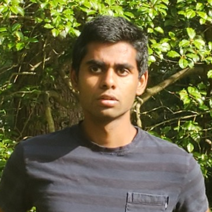

I’m a computer science and math major at the University of Maryland. I'm working with John Dickerson on introducing fairness methods to ride-pooling algorithms. I'm also working with Jordan Boyd-Graber on extending Entity Linking to improve down stream performance on entity linking. I am interested in working on problems involving machine learning, artificial intelligence, and mechanism design for applications such as fairness, healthcare, and criminal justice.
This summer (2021) I'm working as a research intern on the artificial intelligence team at MIT Lincoln Labs. Last summer (2020), I worked as a Software Engineering Intern at Facebook in the Feed-Ranking team. I worked on full stack web application using React and Hack.
You can reach me at nraman1 [at] umd [dot] edu.
Papers
Conferences
Data-Driven Methods for Balancing Fairness and Efficiency in Ride-Pooling.
Naveen Raman, Sanket Shah, John Dickerson
IJCAI 2021.
[pdf]
Investigating methods of balancing inequality and efficiency in Ride Pooling.
Naveen Raman
Undergraduate Consortium at AAAI 2021.
[video]
Data-Driven Methods for Balancing Fairness and Efficiency in Ride-Pooling.
Naveen Raman, Sanket Shah, John Dickerson
Machine Learning for Economics Policy at NeurIPS 2020.
What more can Entity Linking do for Question Answering?
Naveen Raman, Pedro Rodriguez, Jordan Boyd-Graber
HAMLETS Workshop at NeurIPS 2020.
[pdf]
Stress and Burnout in Open Source: Toward Finding, Understanding, and Mitigating Unhealthy Interactions.
Naveen Raman, Minxuan Cao, Yulia Tsvetkov, Christian Kaestner, Bogdan Vasilescu
ICSE 2020 - NIER .
[pdf]
A Muffin Theorem Generator.
Guangqi Cui, John Dickerson, Naveen Durvasula, William Gasarch, Erik Metz, Jacob Prinz, Naveen Raman, Daniel Smolyak, Sung Hyun Yoo
FUN 2018
[pdf]
Presentations
Entity Linking for Quizbowl.
Naveen Raman, Pedro Rodriguez, Jordan Boyd-Graber
MASC-SLL 2020
Teaching
Spring 2021
Fall 2020
Spring 2020
Fall 2019
Spring 2019
Hobbies
In my free time, I enjoy playing basketball, reading books, and watching movies.